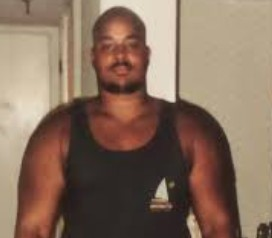
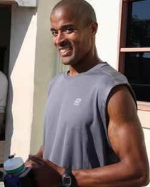

David Goggins: A Story of Transformation
David Goggins' journey of weight loss and mental toughness is an incredible example of how the body can transform when the mind is committed. At his heaviest, Goggins weighed over 300 pounds and struggled with self-doubt and physical limitations. But after a relentless commitment to his fitness journey, he lost over 100 pounds, went on to become a Navy SEAL, and is now known for his inspiring story of overcoming obstacles.
Goggins' story proves that with dedication, consistency, and the right mindset, anything is possible. He encourages us to push beyond our limits and challenge ourselves every day.

